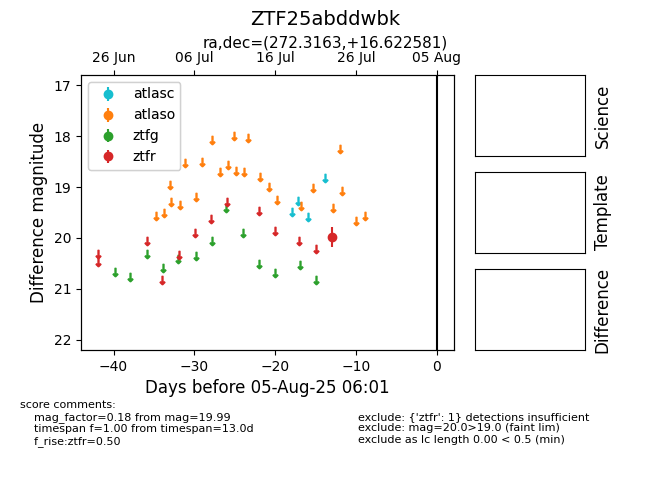

Target ZTF25abddwbk at 2025-08-05 06:01, see:
FINK: fink-portal.org/ZTF25abddwbk
Lasair: lasair-ztf.lsst.ac.uk/objects/ZTF25abddwbk
ALeRCE: alerce.online/object/ZTF25abddwbk
alt names
ZTF25abddwbk (ztf,fink)
coordinates:
equatorial (ra, dec) = (272.3163,+16.62258)
galactic (l, b) = (43.4350,+16.64752)
photometry
last ztfr=19.99
1 ztfr detections
